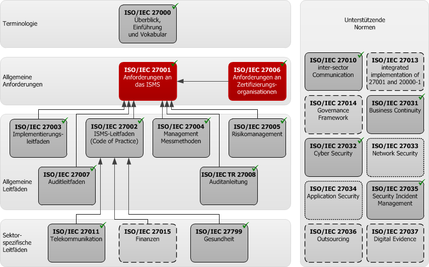
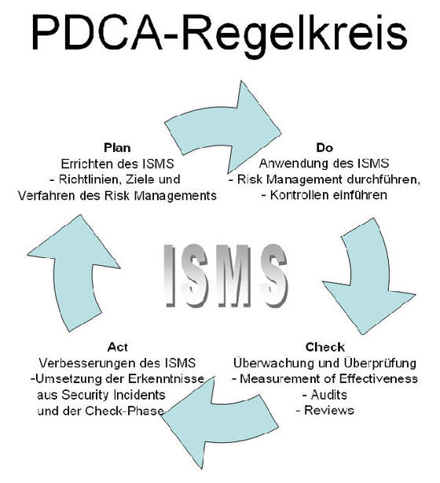

### E-Security 1 - Security Standards - 2LE #### Wintersemester 2018/2019 FH JOANNEUM
### Überblick über Sicherheitstandards - Vielzahl an verfügbaren IT Standards weltweit - "Need" für das jeweilige Unternehmen beachten - Zertifizieren vs. "Guidelines" - Bei Zertifizierung auf Guidelines verweisen (NIST, RHEL, ...)
### Zertifizieren vs. "Guidelines" - ?
### Guidelines - Hinweise/Empfehlung für Best Practice Installation - Herausgegeben von Hersteller oder Institution
### Zertifizierung - Verweis auf Guidelines und "industry accepted standards" - Anerkanntes Gütesiegel und Vertrauen - Meist aufwändiger und mehrstufiger Prozess - Mitarbeit und Akzeptanz des Unternehmens/MA notwendig
### Guidelines 1 - <a href="https://access.redhat.com/documentation/en-us/red_hat_enterprise_linux/7/html/system_administrators_guide/index">Red Hat Enterprise Administrator Guidelines</a> - <a href="https://nvd.nist.gov/ncp/checklist/629">NIST Hardening</a> - <a href="https://www.cisecurity.org/cis-benchmarks/">CIS Benchmark</a> - <a href="https://wiki.mozilla.org/Security/Server_Side_TLS">Mozilla TLS</a> - ...
### Guidelines 2 - CIS - Non-Profit / 2010 gegründet - Dezentral oranisiert, Mitglieder aus verschiedenen Unternehmen - <a href="https://www.cisecurity.org/cis-benchmarks/">CIS Benchmark</a> - <a href="https://www.cisecurity.org/cybersecurity-best-practices/">CIS Best Practices</a>
### Guidelines 3 - BSI - Gegründed 1991 / Bonn - Sowohl Guidelines als auch Zertifizierung von Unternehmen/Produkten - <a href="https://www.bsi.bund.de/DE/Themen/ITGrundschutz/ITGrundschutzKataloge/Inhalt/_content/download/download.html">IT Grundschutz Handbuch</a> - Unterteilt in fünf Abteilungen ("Staat/Wirtschaft", "Cyber-Sicherheit", "Krypto-Technologie", "Cyber-Sicherheit in der Digitalisierung", "Zentrale Aufgaben")
### Guidelines 3 - BSI - BSI-Standard 200-1: Managementsysteme für Informationssicherheit - BSI-Standard 200-2: IT-Grundschutz-Vorgehensweise - BSI-Standard 200-3: Risikomanagement
### Guidelines 4 - NIST - Speziell für US Regierungseinrichtungen - 800-* speziell für IT Security - 800-53 (generelle Übersicht), 800-153 (WIFI), 800-187 (LTE Security) - Updates immer mehr Richtung "Allgemeinheit"
### Standards/Frameworks - COBIT - CISQ - BAFIN - ISO 27000 - Hyprid Framework
### COBIT - Sehr hohe Verbreitung da Bindeglied zwischen ITL und Unternehmenssteuerung - Top-Down Ansatz (-> IT Governance) - Einteilung der IT Aufgaben in Prozesse/Control Objectives
### CISQ - Verwaltet/erweitert durch Gremium - Fokus auf - Software Qualität und deren Verbesserung - Software Sizing (Kosten für Entwicklung)
### BAFIN - Tätig im öffentlichen Interesse - Überwacht und reglementiert Finanzmarkt in Deutschland (Österreich: ÖNB) - Jährliches Audit für Unternehmen im Finanzssektor - Notwendig für Geschäfte im Bank- oder Finanzdienstleistungsgeschäft
### ISO 27000 - Familie von > 20 Standards/Normen zum Thema Informationssicherheit - Herausgegeben und erweitert von ISO und IEC - 27000 gibt ausschließlich Überblick über die Normen und ist nicht zertifizierbar
### ISO 27001 - Kann gegen eine Organisation geprüft werden - Personen könne Qualifikationen zertifizieren für die jeweiligen Aufgaben - Vollständiger Aufbau und Betrieb eines "Information Security Management System, ISMS" - Deckt ua. folgende Punkte ab: - Netzwerksicherheit, Organisationsstruktur, Verantwortlichkeiten/Risikoanalyse, Notfallplanung, Klassifizierung von Informationen
### ISO 27001 - Alles ab 27001 sind Ergänzungen und genauere Spezifikationen je Branche - zB. ISO 27011 für Telekommunikation; ISO 27799 für Gesundheitssektor
### ISO 27002 - Spezialisiert auf Informationssicherheit, letzte Ausgabe 2013 - 14 Kategorien; ua: - Sicherheitsleitlinien (information security policies) - Organisation der Informationssicherheit (organization of information security) - Personalsicherheit (human resources security) - Management von organisationseigenen Werten (asset management) - Zugangskontrolle (access control)


### Hybrid Framework - "Cherry Picking" von Regeln und Normen von verschiedenen anerkannten Standards - Beispiel: PCI: Vielzahl an Überschneidungen mit anderen Normen
### Überschneidungen der Standards? - Information Security Policy - ISO 27002 Kapitel 5 - COBIT "Plan & Organize" - PCI: "Maintain an Information Security Policy"
### E-Security 1 - Security Standards #### Wintersemester 2018/2019 FH JOANNEUM
### Quellenverzeichnis - Red Hat Enterprise Administrator Guideline: https://access.redhat.com/documentation/en-us/red_hat_enterprise_linux/7/html/system_administrators_guide/index - CIS Benchmarks: https://www.cisecurity.org/cis-benchmarks/ - NIST SP 800: https://www.nist.gov/itl/nist-special-publication-800-series-general-information - BAFIN: https://www.bafin.de/DE/Aufsicht/BankenFinanzdienstleister/Zulassung/zulassung_node.html - ISO: https://www.plan42.com/index.php/de/it-security-management/iso-27000-reihe - Georg Mittenecker, E-Security 1, Wintersemester 2017/18 - https://searchsecurity.techtarget.com/tip/IT-security-frameworks-and-standards-Choosing-the-right-one